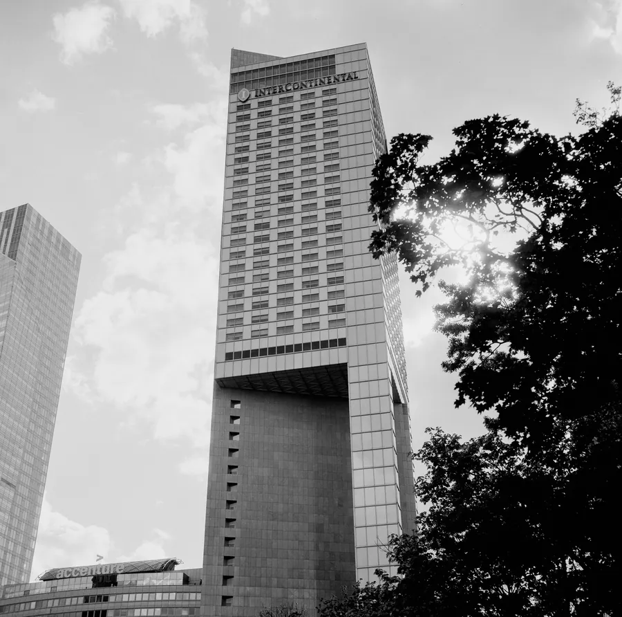
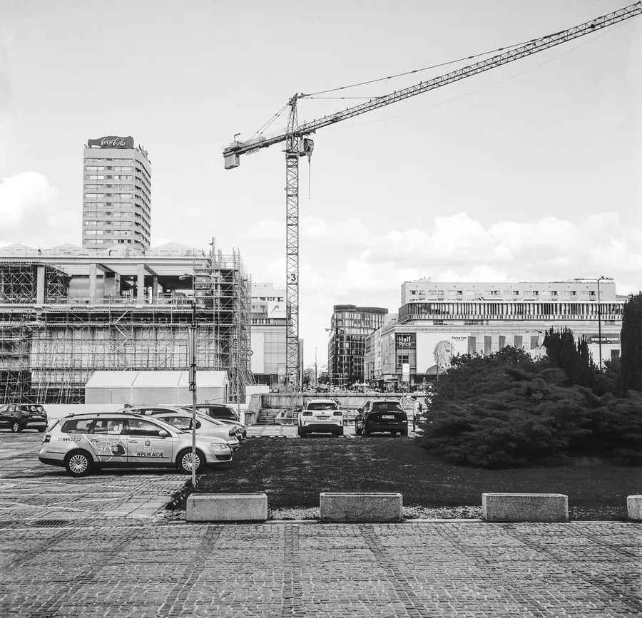
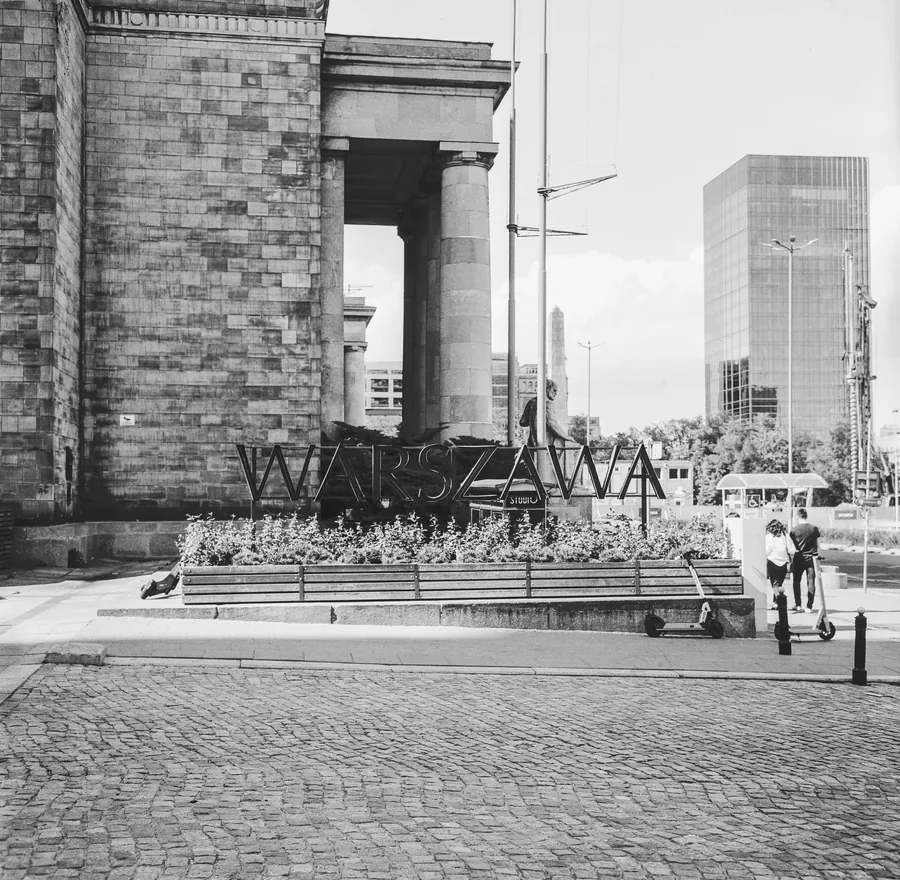
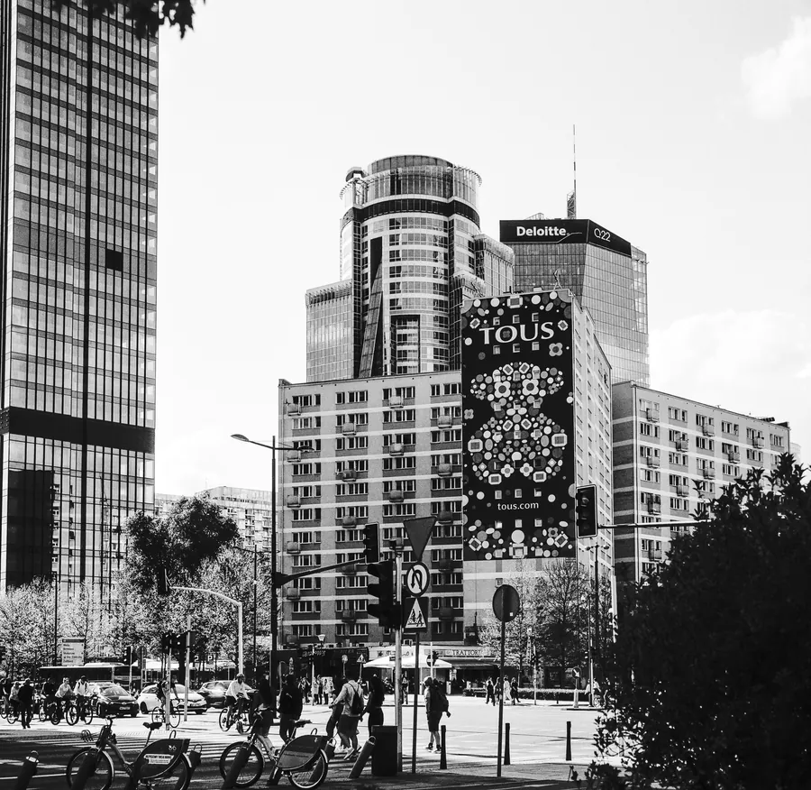

Przejdź do treści
Zenbliski
Menu
Archiwalne
Analogowe
Kolekcja
Akcesoria foto
Materiały reklamowe
Artykuły – blog
Foto ciekawostki
Cyfrowe
Analogowe
Rolleiflex 3,5F, Rollei RPX 100, Warszawa 2022 r.
Aparat
Rolleiflex 3,5F
Film
Rollei RPX 100
Miejsce
Warszawa, 2022 r.




Poprzednia
Nikon F3, Kentmere Pan 100, Warszawa Śródmieście i osiedle Bródno 2025 r.
Następna
Rolleiflex 3,5F, Kodak Ektar 100, Kraków 2022 r.